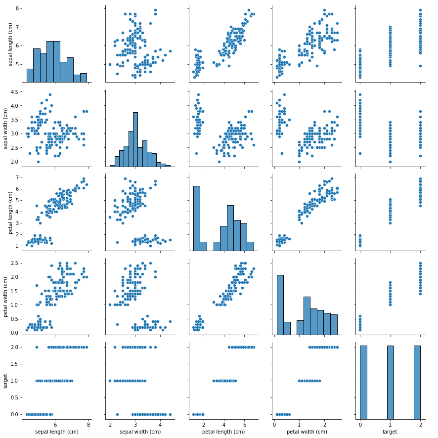

Iris pipeline
Imports
from sklearn import datasets
import numpy as np
import pandas as pd
import seaborn as sns
from sklearn.model_selection import train_test_split
from sklearn.pipeline import Pipeline
from sklearn.preprocessing import StandardScaler
from sklearn.svm import SVC
from sklearn.model_selection import GridSearchCV
Load data
iris = datasets.load_iris()
df = pd.DataFrame(
data=np.c_[iris["data"], iris["target"]], columns=iris["feature_names"] + ["target"]
)
df.head()
| sepal length (cm) | sepal width (cm) | petal length (cm) | petal width (cm) | target | |
|---|---|---|---|---|---|
| 0 | 5.1 | 3.5 | 1.4 | 0.2 | 0.0 |
| 1 | 4.9 | 3.0 | 1.4 | 0.2 | 0.0 |
| 2 | 4.7 | 3.2 | 1.3 | 0.2 | 0.0 |
| 3 | 4.6 | 3.1 | 1.5 | 0.2 | 0.0 |
| 4 | 5.0 | 3.6 | 1.4 | 0.2 | 0.0 |
Visualise data and inspect for missing values/outliers
- First thing we want to do is inspect the data to see if we have any missing values or outliers
df.info()
<class 'pandas.core.frame.DataFrame'>
RangeIndex: 150 entries, 0 to 149
Data columns (total 5 columns):
sepal length (cm) 150 non-null float64
sepal width (cm) 150 non-null float64
petal length (cm) 150 non-null float64
petal width (cm) 150 non-null float64
target 150 non-null float64
dtypes: float64(5)
memory usage: 5.9 KB
df.info()shows that there are no missing values as we have 150 non-null values
sns.pairplot(df)
<seaborn.axisgrid.PairGrid at 0x11e375358>

sns.pairplotgives a beautiful overview of the data
Train-test split
df_ = df.copy()
y = df_.pop('target')
X = df_
X_train, X_test, y_train, y_test = train_test_split(X, y, test_size=0.33)
Setup pipeline
pipe = Pipeline([
("std", StandardScaler()),
("clf", SVC(kernel="linear", C=1))
])
Train pipeline
pipe.fit(X_train, y_train)
Pipeline(memory=None,
steps=[('std',
StandardScaler(copy=True, with_mean=True, with_std=True)),
('clf',
SVC(C=1, cache_size=200, class_weight=None, coef0=0.0,
decision_function_shape='ovr', degree=3,
gamma='auto_deprecated', kernel='linear', max_iter=-1,
probability=False, random_state=None, shrinking=True,
tol=0.001, verbose=False))],
verbose=False)
Training set accuracy
pipe.score(X_train, y_train)
0.96
Test set accuracy
pipe.score(X_test, y_test)
0.98
Grid search
First check the parameters of the pipeline.
pipe.get_params()
{'memory': None,
'steps': [('std', StandardScaler(copy=True, with_mean=True, with_std=True)),
('clf', SVC(C=1, cache_size=200, class_weight=None, coef0=0.0,
decision_function_shape='ovr', degree=3, gamma='auto_deprecated',
kernel='linear', max_iter=-1, probability=False, random_state=None,
shrinking=True, tol=0.001, verbose=False))],
'verbose': False,
'std': StandardScaler(copy=True, with_mean=True, with_std=True),
'clf': SVC(C=1, cache_size=200, class_weight=None, coef0=0.0,
decision_function_shape='ovr', degree=3, gamma='auto_deprecated',
kernel='linear', max_iter=-1, probability=False, random_state=None,
shrinking=True, tol=0.001, verbose=False),
'std__copy': True,
'std__with_mean': True,
'std__with_std': True,
'clf__C': 1,
'clf__cache_size': 200,
'clf__class_weight': None,
'clf__coef0': 0.0,
'clf__decision_function_shape': 'ovr',
'clf__degree': 3,
'clf__gamma': 'auto_deprecated',
'clf__kernel': 'linear',
'clf__max_iter': -1,
'clf__probability': False,
'clf__random_state': None,
'clf__shrinking': True,
'clf__tol': 0.001,
'clf__verbose': False}
We want to try different values for C = (0.01, 0.10, 1.0, 10, 100) so that is clf__C
params = {
"clf__C": [0.01, 0.1, 1.0, 10, 100]
}
gridsearch = GridSearchCV(estimator=pipe, param_grid=params, n_jobs=-1)
gridsearch.fit(X_train, y_train)
/Library/Frameworks/Python.framework/Versions/3.7/lib/python3.7/site-packages/sklearn/model_selection/_split.py:1978: FutureWarning: The default value of cv will change from 3 to 5 in version 0.22. Specify it explicitly to silence this warning.
warnings.warn(CV_WARNING, FutureWarning)
/Library/Frameworks/Python.framework/Versions/3.7/lib/python3.7/site-packages/sklearn/model_selection/_search.py:813: DeprecationWarning: The default of the `iid` parameter will change from True to False in version 0.22 and will be removed in 0.24. This will change numeric results when test-set sizes are unequal.
DeprecationWarning)
GridSearchCV(cv='warn', error_score='raise-deprecating',
estimator=Pipeline(memory=None,
steps=[('std',
StandardScaler(copy=True,
with_mean=True,
with_std=True)),
('clf',
SVC(C=1, cache_size=200,
class_weight=None, coef0=0.0,
decision_function_shape='ovr',
degree=3, gamma='auto_deprecated',
kernel='linear', max_iter=-1,
probability=False,
random_state=None, shrinking=True,
tol=0.001, verbose=False))],
verbose=False),
iid='warn', n_jobs=-1,
param_grid={'clf__C': [0.01, 0.1, 1.0, 10, 100]},
pre_dispatch='2*n_jobs', refit=True, return_train_score=False,
scoring=None, verbose=0)
print('Best score for train set:', gridsearch.best_score_)
Best score for train set: 0.94
print('Best param C:', gridsearch.best_params_['clf__C'])
Best param C: 0.1
print("Best score for test set:", gridsearch.score(X_test, y_test))
Best score for test set: 1.0